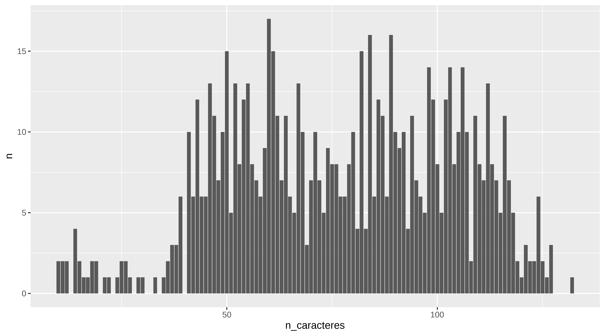

library(tidyverse)
root_directory = "~/proyecto_cachitos/"
anno <- "2024"
nombre_ficheros <- list.files(path = str_glue("{root_directory}{anno}_txt/")) %>%
enframe() %>%
rename(n_fichero = value)
nombre_ficheros
#> # A tibble: 769 × 2
#> name n_fichero
#> <int> <chr>
#> 1 1 00000010.jpg.subtitulo.tif.txt
#> 2 2 00000011.jpg.subtitulo.tif.txt
#> 3 3 00000012.jpg.subtitulo.tif.txt
#> 4 4 00000015.jpg.subtitulo.tif.txt
#> 5 5 00000016.jpg.subtitulo.tif.txt
#> 6 6 00000017.jpg.subtitulo.tif.txt
#> 7 7 00000021.jpg.subtitulo.tif.txt
#> 8 8 00000022.jpg.subtitulo.tif.txt
#> 9 9 00000023.jpg.subtitulo.tif.txt
#> 10 10 00000027.jpg.subtitulo.tif.txt
#> # ℹ 759 more rowsCachitos 2024. Segunda parte
estadística
polémica
2025
textmining
ocr
linux
cachitos
Una vez que ya hemos visto en la entrada anterior como extraer los rótulos, vamos a juntarlos todos en un sólo csv y hacer algo de limpieza.
Dejo el enlace a los ficheros de texto construidos por tesseract enlace directorio
Lectura rótulos
Ahora los podemos leer en orden
subtitulos <- list.files(path = str_glue("{root_directory}{anno}_txt/"),
pattern = "*.txt", full.names = TRUE) %>%
map(~read_file(.)) %>%
enframe() %>%
left_join(nombre_ficheros)
glimpse(subtitulos)
#> Rows: 769
#> Columns: 3
#> $ name <int> 1, 2, 3, 4, 5, 6, 7, 8, 9, 10, 11, 12, 13, 14, 15, 16, 17, 1…
#> $ value <list> "CONCHA VELASCO\n(Tiempo de fiesto, 1971)\n\f", "y > HEYO H…
#> $ n_fichero <chr> "00000010.jpg.subtitulo.tif.txt", "00000011.jpg.subtitulo.ti…
subtitulos
#> # A tibble: 769 × 3
#> name value n_fichero
#> <int> <list> <chr>
#> 1 1 <chr [1]> 00000010.jpg.subtitulo.tif.txt
#> 2 2 <chr [1]> 00000011.jpg.subtitulo.tif.txt
#> 3 3 <chr [1]> 00000012.jpg.subtitulo.tif.txt
#> 4 4 <chr [1]> 00000015.jpg.subtitulo.tif.txt
#> 5 5 <chr [1]> 00000016.jpg.subtitulo.tif.txt
#> 6 6 <chr [1]> 00000017.jpg.subtitulo.tif.txt
#> 7 7 <chr [1]> 00000021.jpg.subtitulo.tif.txt
#> 8 8 <chr [1]> 00000022.jpg.subtitulo.tif.txt
#> 9 9 <chr [1]> 00000023.jpg.subtitulo.tif.txt
#> 10 10 <chr [1]> 00000027.jpg.subtitulo.tif.txt
#> # ℹ 759 more rowsTenemos 769 rótulos de los cuales la mayoría estarán vacíos
Contando letras
En n_fichero tenemos el nombre y en value el texto. Si vemos alguno de los subtítulos.
subtitulos %>%
pull(value) %>%
pluck(246)
#> [1] "El cámara sufriendo más para encontrar a Bisbal que\n\nnosotros una cifra exacta en “Cifras y Letras”.\n\f"Contemos letras.
subtitulos <- subtitulos %>%
mutate(n_caracteres = nchar(value))
subtitulos %>%
group_by(n_caracteres) %>%
count()
#> # A tibble: 111 × 2
#> # Groups: n_caracteres [111]
#> n_caracteres n
#> <int> <int>
#> 1 10 2
#> 2 11 2
#> 3 12 2
#> 4 14 4
#> 5 15 2
#> 6 16 1
#> 7 17 1
#> 8 18 2
#> 9 19 2
#> 10 21 1
#> # ℹ 101 more rows
subtitulos %>%
group_by(n_caracteres) %>%
count() %>%
ggplot(aes(x = n_caracteres, y = n)) +
geom_col()
Y viendo el conteo podríamos ver cómo son los rótulos con menos de 25 caracteres. Y suele ser por haber pillado el nombre de la canción en vez del rótulo
subtitulos %>%
filter(n_caracteres <= 25, n_caracteres > 0 ) %>%
arrange(desc(n_caracteres)) %>%
head(40) %>%
pull(value)
#> [[1]]
#> [1] "La Quinqui y la Quinqui\n\f"
#>
#> [[2]]
#> [1] "“¿qué lleva ese porro?”\n\f"
#>
#> [[3]]
#> [1] "La Suprema de Nápoles.\n\f"
#>
#> [[4]]
#> [1] "Ambientación musical\n\f"
#>
#> [[5]]
#> [1] "Hortera y Cassette.\n\f"
#>
#> [[6]]
#> [1] "Zidones y Pavone.\n\f"
#>
#> [[7]]
#> [1] "¡Vamos, Raffa!\n\n \n\f"
#>
#> [[8]]
#> [1] "El as de coplas,\n\f"
#>
#> [[9]]
#> [1] "Mejor así,\n\n \n\n \n\f"
#>
#> [[10]]
#> [1] "m Bra o\n\n¡A AA,\n\f"
#>
#> [[11]]
#> [1] "y > HEYO HELLO\n\f"
#>
#> [[12]]
#> [1] "La Lambada\n\n \n\f"
#>
#> [[13]]
#> [1] "Celine Diosa,\n\f"
#>
#> [[14]]
#> [1] "¡2 de : 9\"\n=\n\f"
#>
#> [[15]]
#> [1] "“La La Land\"\n\f"
#>
#> [[16]]
#> [1] "+=\n\n \n\nun\n\n \n\f"
#>
#> [[17]]
#> [1] "e? $5 ES\n\n—E\n\f"
#>
#> [[18]]
#> [1] "MS\nSA A SA\n\f"
#>
#> [[19]]
#> [1] "LA ,\n\n\"a A\n\f"
#>
#> [[20]]
#> [1] "1EVES.\n\n \n\f"
#>
#> [[21]]
#> [1] "¿e LIN PA\n\f"
#>
#> [[22]]
#> [1] "5\n\nan WE\n\f"
#>
#> [[23]]
#> [1] "elas 255\n\f"subtitulos %>%
filter(n_caracteres >= 30) %>%
arrange(n_caracteres)
#> # A tibble: 742 × 4
#> name value n_fichero n_caracteres
#> <int> <list> <chr> <int>
#> 1 410 <chr [1]> 00000707.jpg.subtitulo.tif.txt 30
#> 2 315 <chr [1]> 00000541.jpg.subtitulo.tif.txt 33
#> 3 455 <chr [1]> 00000785.jpg.subtitulo.tif.txt 35
#> 4 336 <chr [1]> 00000571.jpg.subtitulo.tif.txt 36
#> 5 363 <chr [1]> 00000618.jpg.subtitulo.tif.txt 36
#> 6 213 <chr [1]> 00000372.jpg.subtitulo.tif.txt 37
#> 7 338 <chr [1]> 00000576.jpg.subtitulo.tif.txt 37
#> 8 469 <chr [1]> 00000819.jpg.subtitulo.tif.txt 37
#> 9 177 <chr [1]> 00000307.jpg.subtitulo.tif.txt 38
#> 10 222 <chr [1]> 00000386.jpg.subtitulo.tif.txt 38
#> # ℹ 732 more rowsUsando la librería magick en R que permite usar imagemagick en R, ver post de Raúl Vaquerizo y su homenaje a Sean Connery, podemos ver el fotgrama correspondiente
library(magick)
(directorio_imagenes <- str_glue("{root_directory}video/{anno}_jpg/"))
#> ~/proyecto_cachitos/video/2024_jpg/
image_read(str_glue("{directorio_imagenes}00000441.jpg"))image_read(str_glue("{directorio_imagenes}00000246.jpg"))Así que nos quedamos con los rótulos con más de 30 caracteres
subtitulos <- subtitulos %>%
filter(n_caracteres > 30)
dim(subtitulos)
#> [1] 741 4Detección duplicados
Mini limpieza de caracteres extraños y puntuación
string_mini_clean <- function(string){
string <- gsub("?\n|\n", " ", string)
string <- gsub("\r|?\f|=", " ", string)
string <- gsub('“|”|—|>'," ", string)
string <- gsub("[[:punct:][:blank:]]+", " ", string)
string <- tolower(string)
string <- gsub(" ", " ", string)
return(string)
}
# Haciendo uso de programación funciona con purrr es muy fácil pasar esta función a cada elemento. y decirle que
# el resultado es string con map_chr
subtitulos_proces <- subtitulos %>%
mutate(texto = map_chr(value, string_mini_clean)) %>%
select(-value)
subtitulos_proces %>%
select(texto)
#> # A tibble: 741 × 1
#> texto
#> <chr>
#> 1 "concha velasco tiempo de fiesto 1971 "
#> 2 "hello hello buenas noches lo primero "
#> 3 "lorenzo santamaría hello hello luces en la noche 1974 "
#> 4 "santamaría era tan apuesto que este cachito lo patrocina codere "
#> 5 "aquel día el coreógrafo se había pillado el día de asuntos propios "
#> 6 "mari trini escúchame luces en la noche 1972 "
#> 7 "transgresora valiente feminista mejor nos habría ido si la hubiéramos escuc…
#> 8 "nota que el sofá tenga orejas no significa que pueda escucharte "
#> 9 "juan erasmo mochi y parió la abuela "
#> 10 "tiene mucho mérito triunfar llamándote mochi fuera de la carta de un restau…
#> # ℹ 731 more rowsDistancia de texto entre rótulos consecutivos. Usamos método lcs “longest common substring distance”.
Si tienen distancia 0 es que son el mismo subtítulo
subtitulos_proces <- subtitulos_proces %>%
mutate(texto_anterior = lag(texto)) %>%
mutate(distancia = stringdist::stringdist(texto, texto_anterior, method = "lcs"))
subtitulos_proces %>%
filter(!is.na(distancia)) %>%
select(name,texto,distancia, texto_anterior, everything()) %>%
arrange(distancia) %>%
DT::datatable(options = list(scrollX=TRUE))Decidimos eliminar texto cuya distancia sea menor de 30
subtitulos_proces <- subtitulos_proces %>%
filter(distancia >= 30) %>%
select(-texto_anterior)
subtitulos_proces %>%
select(name,texto, everything()) %>%
DT::datatable()No nos hemos quitado todos los duplicados pero sí algunos de ellos.
dim(subtitulos_proces)
#> [1] 636 5Y ya solo tenemos 636 rótulos
Guardamos el fichero unido
write_csv(subtitulos_proces,
file = str_glue("{root_directory}{anno}_txt_unido.csv"))
DT::datatable(
subtitulos_proces %>%
select(-distancia) %>%
arrange(n_fichero))Y en el DT ya podéis buscar rótulos dedicados a Pedro Sánches por ejemplo.
rot_sanchez <- subtitulos_proces |>
filter(texto |> tolower() |> stringr::str_detect("sánchez"))
rot_sanchez
#> # A tibble: 8 × 5
#> name n_fichero n_caracteres texto distancia
#> <int> <chr> <int> <chr> <dbl>
#> 1 34 00000071.jpg.subtitulo.tif.txt 98 "les ofrecemos en… 108
#> 2 59 00000111.jpg.subtitulo.tif.txt 114 " volaré lo prime… 103
#> 3 64 00000119.jpg.subtitulo.tif.txt 111 " mo leerás mañan… 117
#> 4 172 00000300.jpg.subtitulo.tif.txt 100 "si la rumba y el… 125
#> 5 189 00000327.jpg.subtitulo.tif.txt 105 "el propósito par… 97
#> 6 318 00000544.jpg.subtitulo.tif.txt 94 "mira pedro sánch… 107
#> 7 348 00000593.jpg.subtitulo.tif.txt 123 " y hoy en la ter… 108
#> 8 629 00001106.jpg.subtitulo.tif.txt 81 "la letra resume … 89
rot_sanchez$texto
#> [1] "les ofrecemos en exclusiva un extracto de las últimas conversaciones entre sánchez y puigdemont "
#> [2] " volaré lo primero que piensa sánchez cuando tiene que ir a por el pan veis ya ha caído el del falcon "
#> [3] " mo leerás mañana en x nosotros también somos marioneta de sánchez bailando en la cuerda del gobierno "
#> [4] "si la rumba y el bakalao pudieron entenderse quizás aún haya esperanza para sánchez y feijóo "
#> [5] "el propósito para 2025 de pedro sánchez y begoña gómez es poder cantar este estribillo al menos un día "
#> [6] "mira pedro sánchez al fondo hay una plataforma disponible puedes subir ahí tu documental "
#> [7] " y hoy en la tertulia cristina pardo nuria roca juan del val y tamara falcó volverán a llamar dictador a sánchez "
#> [8] "la letra resume el subtexto de las dos cartas a la ciudadanía de pedro sánchez "Ahora nos quesmoa con el nombre del fichero para poder identificar rápidamente el fotograma y el subtítulo
# identificamos nombre del archivo jpg con los rótulos polémicos
sanchez_fotogramas_fn <- unique(substr(rot_sanchez$n_fichero, 1,9))
head(sanchez_fotogramas_fn)
#> [1] "00000071." "00000111." "00000119." "00000300." "00000327." "00000544."
# creamos la ruta completa donde están
sanchez_fotogramas_fn_full <- paste0(str_glue("{root_directory}video/{anno}_jpg/"), sanchez_fotogramas_fn, "jpg")
# añadimos sufijo subtitulo.tif para tenr localizado la imagen que tiene solo los rótulos
sanchez_subtitulos_full <- paste0(sanchez_fotogramas_fn_full,".subtitulo.tif")Ahora leemos las imágenes y las guardamos en una lista
sanchez_fotogramas_img <- map(sanchez_fotogramas_fn_full, image_read)
sanchez_subtitulos_img <- map(sanchez_subtitulos_full, image_read)
sanchez_fotogramas_img[[4]]sanchez_subtitulos_img[[4]]set.seed(49)
# escogemos 4 al azar
indices <- sort(sample(1:length(sanchez_fotogramas_img), 4))
lista_fotogram_polemicos <- lapply(sanchez_fotogramas_img[indices], grid::rasterGrob)
gridExtra::grid.arrange(grobs=lista_fotogram_polemicos )
Podéis hacer el ejercicio buscando a Errejón o a Feijóo o al juez Peinado y ya que cada cual saque sus conclusiones
Con el rey
rot_rey <- subtitulos_proces |>
filter(texto |> tolower() |> stringr::str_detect("\\brey\\b|\\bjuan carlos\\b"))
rot_rey$texto
#> [1] "se la ha relacionado con el rey juan carlos lo cual en términos estadísticos no tiene mucho e mérito "
#> [2] "el verdadero rey campechano siempre fue el de la rumba "
#> [3] "bárbara rey quién será palmarés 1976 "Pues con esto ya tenéis para jugar un rato.